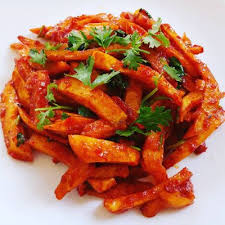

Home
Chips masala

Description
Chips masala is a popular Kenyan street food made by tossing deep-fried
chips in a spicy, tangy tomato-based sauce. It's rich with flavors from
onions, garlic, chili, and sometimes a hint of vinegar or lemon. Often
garnished with coriander, it’s served hot and packed with a satisfying
kick. Loved for its bold taste and comforting feel, chips masala is a
favorite in many local eateries.
Ingredients
- Potatoes
- Cooking oil
- Tomatoes
- Onions
- Garlic
- Ginger
- Tomato paste
- Green chillies
- Garam masala/curry powder
- Salt
- Black pepper(optional)
Steps
- Peel and slice potatoes into desired chip size
- Rinse and dry them with a kitchen towel
- Deep fry in hot oil until golden and crispy
- Set aside on a paper towel to drain excess oil
- In a pan, heat 1-2 tablespoons of oil
- Saute chopped onions until soft and golden
- Add minced garlic (and ginger if using), stir for 30 seconds
- Add blended or grated tomatoes and cook until the raw smell fades
-
Stir in tomato paste (otional), chilli powder, and garam masala/curry
powder
- Season with salt and a splash of vinegar or lemon juice
- Let the sauce simmer until thick and flavorful
- Toss the fried chips into the masala source
- Stir gently until all chips are well coated
- Cook for 1-2 minutes on low heat to absorb flavors
- Sprinkle freshly chopped coriander leaves on top
- Serve hot - enjoy with ketchup, mayo or a cold soda